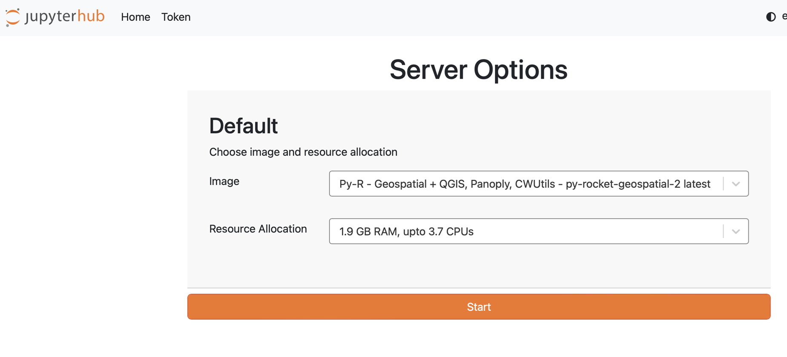

4 Preparation
5 What to Expect
The PAM-Glider Rodeo Hackweek will focus on applied, hands-on learning, with participants engaging in extended periods of small-group work. Our tutorials are designed to offer a broad snapshot of our data and science tools to support your applied investigations. Due to the relatively short duration of our events, we are not able to provide comprehensive, in-depth training in fundamental tools. Rather, our goal is to encourage team projects working with (or inspired by!) our glider and PAM datasets. The details of implementation will be what you work out via peer-learning (helping each other) in your project group.
5.1 Typical Workflows and Tools
Here are a few specific scenarios of how hackweek participants will engage with data science tools:
Connecting to a Jupyter Notebook environment to access data, github, and R/Python.
Accessing cloud-hosted environmental data products through Aquaview and CoastWatch.
Explore data from the ‘Glider Rodeo’ with multiple glider platforms and sensors.
Modifying code, committing it to Git and pushing changes to GitHub, for others on your team to view and edit.
Create summaries of your project team, methods, and results for final presentation & sharing via github
5.2 HackWeek Projects
A good hackweek project is a concrete idea that a team can flesh out in a week together. Not everyone needs to code. There is background research to do, data to find, and lots and lots of data wrangling. A big part of the fun of hackweek is working together with a group with a diverse set of interests and skills. “I’ll find some data.” “I make some maps of our study area.” “I’ll figure out how to do a boosted regression tree.” “I’ll use that tutorial we were shown and get xyz glider data” etc, etc. It is messy, but through this process you’ll learn new skills and also get to know your project team mates.
The project work is a combination of
fleshing out a science idea that is small enough during Monday brainstorming.
dividing up into tasks so that everyone can participate.
coding and data wrangling on Tuesday through Thursday.
and then Friday, frantically putting a presentation on your project and results.
See Projects page for more information.
6 Checklist
Here is a checklist of things you need to do in advance:
- [ ] Create a Github Account
- [ ] Login to the JupyterHub
- [ ] Review material on the Glider Rodeo and Hackathon websites
6.1 Github Account
GitHub enables us to collaborate on code across teams in a web environment. If you do not already have a GitHub account, then navigate to GitHub, enter your email address and click on the green ‘Sign up for GitHub’ button. Be sure to save your username and password somewhere for use during the hackweek.
6.2 Hackweek JupyterHub
We will be using a pre-provisioned compute environment for the hackweek which can be accessed via a web browser. You will not need to install anything. Please follow these instructions which will guide you through gaining access to the JupyterHub.
Watch this video to get an orientation on our JupyterHub.
Sign in by navigating to the JupyterHub. Instructions to sign in are in our Slack channel.
You will see server options. To start, you can stay with the default image and RAM. It can take several minutes for new servers to launch on the cloud. Once things are spun up, you will see your very own instance of a JupyterLab environment.

You will have access to your own virtual drive space under the /home/jovyan directory. No other users will be able to see or access your data files. You can add/remove/edit files in your virtual drive space. You will also have access to the shared-public folder (read and write access). These are shared spaces so please make sure not to delete files from here unless they are yours.
To save our community money, when you are finished working for the day it is helpful for you to explicitly stop your server before logging out of your JupyterHub session. To shut your server down immediately when you’re exiting your session please select “File -> Hub Control Panel -> Stop my Server” then you can click the “Log Out” button. We ask this because when you keep a session active it uses up AWS resources and these resources cost money per hour of use. If you forget this step, though, the server will shut down automatically after 90 min of no use. Logging out will NOT cause any files under your home directory to be deleted. It is equivalent to turning off your desktop computer at the end of the day.
6.3 Pre-HackWeek Learning (Optional)
6.3.1 What is Git?
Git is a version control system that many scientists use to collaborate on code.
See the Software Carpentry Git instructions for a thorough explanation and background information.
You are not required to know Git in advance of this event, but this is a great opportunity to learn all about it! Here’s a quick introduction video from the official website
We will provide a hands-on tutorial to get participants onto the Glider Rodeo Hackweek JupyterHub. Watch this video for a quick orientation to the JupyterHub.